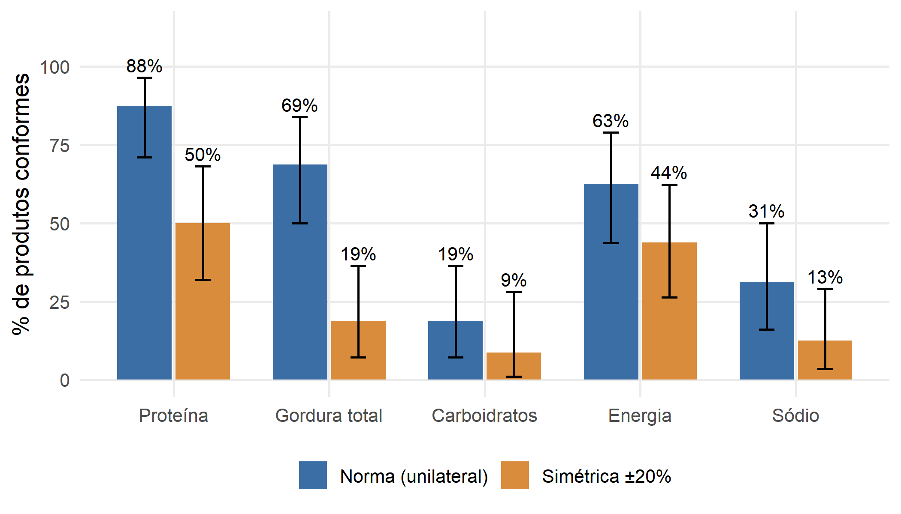
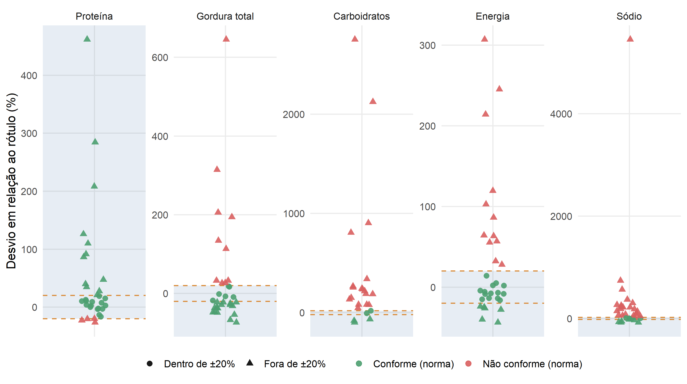

| Nutriente | Pares (n) | Norma: conformes | ±20%: avaliáveis (N) | ±20%: conformes | Rótulo = 0 |
|---|---|---|---|---|---|
| Proteína | 32 | 87,5% (IC 95%: 71,0–96,5) | 32 | 50,0% (IC 95%: 31,9–68,1) | 0 |
| Gordura total | 32 | 68,8% (IC 95%: 50,0–83,9) | 32 | 18,8% (IC 95%: 7,2–36,4) | 0 |
| Carboidratos | 32 | 18,8% (IC 95%: 7,2–36,4) | 23 | 8,7% (IC 95%: 1,1–28,0) | 9 |
| Energia | 32 | 62,5% (IC 95%: 43,7–78,9) | 32 | 43,8% (IC 95%: 26,4–62,3) | 0 |
| Sódio | 32 | 31,3% (IC 95%: 16,1–50,0) | 32 | 12,5% (IC 95%: 3,5–29,0) | 0 |
| Nota. Norma: percentual sobre todos os pares (o rótulo = 0 é avaliado pelo limiar do Anexo IV). ±20%: percentual sobre os produtos com rótulo > 0. IC 95% exato (Clopper-Pearson). | |||||
5 · Conformidade nutricional
ImportanteCritério de conformidade: duas regras lado a lado
Este bloco classifica cada produto e cada nutriente como conforme ou não conforme, sempre comparando o valor declarado no rótulo (referência) com o medido em laboratório (FoodScan). Duas regras são mostradas lado a lado, porque respondem a perguntas diferentes:
Regra da norma (RDC 429/2020, art. 33; a tolerância vale para fins de fiscalização e tem um só sentido):
- Para energia, carboidratos, gorduras totais e sódio (nutrientes a limitar): o valor analisado não pode ser superior a 120% do declarado. Valores menores que o declarado não são penalizados.
- Para proteínas (nutriente a garantir): o valor analisado não pode ser inferior a 80% do declarado. Valores maiores que o declarado não são penalizados.
- Rótulo = 0: pela IN 75/2020 (Anexo IV), declarar 0 só é regular se a quantidade for “não significativa” por 100 g e por porção: até 0,5 g (proteína, gordura total, carboidratos), 4 kcal (energia) ou 5 mg (sódio). O produto é conforme se o laboratório ficar até esse limiar nas duas bases. Esta leitura combina o Anexo IV com o art. 33 e é interpretação do projeto.
Regra simétrica de ±20% (decisão do pesquisador):
- O desvio relativo (%) = (laboratório − rótulo) ÷ rótulo × 100 deve ficar entre −20% e +20%, para todos os nutrientes e nos dois sentidos.
- Rótulo = 0: não existe percentual de um valor zero; esses casos ficam fora desta regra (“não avaliáveis”) e não entram no denominador.
Como ler a diferença. A regra da norma pergunta se o rótulo esconde excesso de um nutriente a limitar (ou falta de um nutriente a garantir). A regra simétrica pergunta se o rótulo é preciso, errando para cima ou para baixo. Para produtos com rótulo maior que zero, tudo o que a regra simétrica aprova a norma também aprova; a norma aprova mais.
Limites desta análise. (1) Os trechos da norma foram lidos no texto oficial da RDC 429/2020, da IN 75/2020 e no Perguntas e Respostas da Anvisa; a regra do rótulo = 0 é interpretação do projeto, a confirmar. (2) A minuta de revisão de 2025 mantém a tolerância de um só sentido e propõe excluir a energia; não foi encontrada publicação final. (3) A norma determina a energia por cálculo indireto; comparar com o kcal derivado do kJ do laboratório é uma aproximação. (4) O critério ignora a incerteza analítica do FoodScan. (5) Os valores de sódio de laboratório ainda não foram checados, então a conformidade do sódio é provisória. Detalhes e fontes na planilha normas_referencia.xlsx.
Resultado por nutriente

| Nutriente | Conforme nas duas | Só pela norma | Só pela ±20% | Em nenhuma |
|---|---|---|---|---|
| Proteína | 16 | 12 | 0 | 4 |
| Gordura total | 6 | 16 | 0 | 10 |
| Carboidratos | 2 | 3 | 0 | 18 |
| Energia | 14 | 6 | 0 | 12 |
| Sódio | 4 | 6 | 0 | 22 |
| Nota. 'Só pela norma': o laboratório mede menos que o rótulo em um nutriente a limitar (ou mais em proteína) além de 20%, o que a norma não penaliza. | ||||
NotaInterpretação
Pela regra da norma, a conformidade vai de 18,8% (Carboidratos) a 87,5% (Proteína); pela regra simétrica de ±20%, de 8,7% (Carboidratos) a 50,0% (Proteína). A norma aprova mais produtos em todos os nutrientes onde há diferença. Para produtos com rótulo maior que zero, 0 produto(s)-nutriente(s) são aprovados só pela regra simétrica (esperado: nenhum, pois a norma aceita tudo o que cabe em ±20%) e 43 são aprovados só pela norma. A diferença vem do sentido não penalizado pela norma: Proteína (12 produtos), Gordura total (16 produtos), Carboidratos (3 produtos), Energia (6 produtos) e Sódio (6 produtos). Nesses casos o laboratório mediu menos do que o rótulo declara (ou mais proteína), e a norma não considera isso infração, embora o rótulo seja impreciso.
Qual usar? As duas respondem perguntas diferentes: a norma mede o risco regulatório (o rótulo esconde excesso de um nutriente a limitar ou falta de um a garantir?), e a regra simétrica mede a precisão do rótulo. Os intervalos de confiança são largos (no máximo 32 produtos), então os percentuais indicam ordem de grandeza e não valores exatos. Esta tabela descreve a conformidade e não testa hipótese; o teste de comparação entre nutrientes está adiante.
Rótulo igual a zero (carboidratos)
| Produto | Subgrupo | Porção (g) | Laboratório (g/100 g) | Laboratório (g/porção) | Resultado (norma) |
|---|---|---|---|---|---|
| P008 | Salgado | 30 | 14,85 | 4,45 | Não conforme |
| P048 | Salgado e defumado | 100 | 9,23 | 9,23 | Não conforme |
| P043 | Salgado | 100 | 8,92 | 8,92 | Não conforme |
| P031 | Linguiça | 100 | 4,27 | 4,27 | Não conforme |
| P032 | Linguiça | 100 | 3,45 | 3,45 | Não conforme |
| P033 | Salgado | 100 | 1,81 | 1,81 | Não conforme |
| P014 | Emulsionado | 50 | 0,83 | 0,42 | Não conforme |
| P047 | Salgado e defumado | 100 | 0,73 | 0,73 | Não conforme |
| P041 | Salgado | 100 | 0,24 | 0,24 | Conforme (zero justificado) |
| Nota. Limiar do Anexo IV: até 0,5 g de carboidratos por 100 g e por porção. Na regra simétrica de ±20%, estes produtos não são avaliáveis. | |||||
NotaInterpretação
9 produtos declaram zero carboidratos. Pela norma, declarar zero só é regular se a quantidade for não significativa (até 0,5 g) por 100 g e por porção. O laboratório mediu mais que isso em 8 deles, de modo que o zero declarado não se sustenta nesses casos (valores medidos de 0,73 a 14,85 g por 100 g). 1 produto(s) tem(êm) zero justificado (P041). A regra simétrica de ±20% não consegue avaliar esses casos, e a norma, ao tratá-los pelo limiar do Anexo IV, é a que cobre essa lacuna. Duas ressalvas: a leitura ‘nas duas bases’ é interpretação do projeto, e o FoodScan tem incerteza analítica própria em teores muito baixos.
Desvio em relação ao rótulo
| Nutriente | n | Mediana (Q1–Q3) | Mín a máx |
|---|---|---|---|
| Proteína | 32 | 10,4 (-2,4 a 41,5) | -26,6 a 461,5 |
| Gordura total | 32 | -20,3 (-36,3 a 28,0) | -74,0 a 645,2 |
| Carboidratos | 23 | 185,5 (62,1 a 259,1) | -100,0 a 2751,4 |
| Energia | 32 | -1,3 (-14,3 a 58,4) | -44,0 a 307,0 |
| Sódio | 32 | 77,5 (4,4 a 221,0) | -80,2 a 5451,0 |
| Nota. Desvio positivo: laboratório maior que o rótulo. | |||

NotaInterpretação
Cada ponto é um produto. Pela norma, estão conformes os pontos dentro da faixa azul (abaixo de +20% nos nutrientes a limitar; acima de −20% em proteína); pela regra simétrica, os que ficam entre as linhas tracejadas. Os desvios medianos são de 10% em proteína, -20% em gordura total, 185% em carboidratos, -1% em energia e 78% em sódio. Valores positivos indicam laboratório acima do rótulo. Carboidratos e sódio têm desvios percentuais enormes porque, com valores declarados pequenos, uma diferença absoluta modesta vira um percentual grande (cada painel tem a sua escala). Um desvio percentual grande em um nutriente presente em quantidade muito pequena tem pouca relevância nutricional; vale cruzar com o valor absoluto.
Comparação entre nutrientes
| Regra | Produtos incluídos | Q de Cochran | gl | p |
|---|---|---|---|---|
| Norma (unilateral) | 32 | 43,89 | 4 | <0,001 |
| Simétrica ±20% | 23 | 27,78 | 4 | <0,001 |
| Nota. Na regra simétrica entram só os produtos avaliáveis em todos os cinco nutrientes (rótulo > 0 em todos); na norma, todos os produtos com os dois valores. | ||||
NotaInterpretação
O que o teste responde. O teste Q de Cochran compara a proporção de produtos conformes entre os cinco nutrientes nos mesmos produtos. O valor de p é a probabilidade de ver diferenças tão grandes entre as taxas se todos os nutrientes tivessem a mesma chance de estar conformes.
Regra da norma: Q(4) = 43,89, p < 0,001 (n = 32 produtos). Como p < 0,05, há evidência de que a conformidade difere entre os nutrientes.
Regra simétrica de ±20%: Q(4) = 27,78, p < 0,001 (n = 23 produtos). Como p < 0,05, há evidência de que a conformidade difere entre os nutrientes.
Os dois testes são exploratórios. A regra simétrica usa uma amostra menor (só produtos avaliáveis em todos os nutrientes), o que reduz o poder do teste; um p alto não prova que os nutrientes sejam equivalentes.
Conformidade por produto
| Produto | Subgrupo | Proteína | Gordura total | Carboidratos | Energia | Sódio | Conformes (norma) | Conformes (±20%) |
|---|---|---|---|---|---|---|---|---|
| P004 | Defumado | 34,7% · N✓ · S✗ | -37,7% · N✓ · S✗ | -81,9% · N✓ · S✗ | -8,5% · N✓ · S✓ | -54,3% · N✓ · S✗ | 5 de 5 | 1 de 5 |
| P027 | Defumado | 86,3% · N✓ · S✗ | -47,9% · N✓ · S✗ | -67,4% · N✓ · S✗ | -40,2% · N✓ · S✗ | -71,7% · N✓ · S✗ | 5 de 5 | 0 de 5 |
| P003 | Emulsionado | -13,4% · N✓ · S✓ | -25,8% · N✓ · S✗ | -7,1% · N✓ · S✓ | -6,9% · N✓ · S✓ | 21,5% · N✗ · S✗ | 4 de 5 | 3 de 5 |
| P006 | Salgado | 2,8% · N✓ · S✓ | -74,0% · N✓ · S✗ | 2123,3% · N✗ · S✗ | 1,9% · N✓ · S✓ | 4,6% · N✓ · S✓ | 4 de 5 | 3 de 5 |
| P025 | Emulsionado | -3,0% · N✓ · S✓ | -9,3% · N✓ · S✓ | 19,1% · N✓ · S✓ | -27,9% · N✓ · S✗ | 137,0% · N✗ · S✗ | 4 de 5 | 3 de 5 |
| P041 | Salgado | 109,7% · N✓ · S✗ | -1,3% · N✓ · S✓ | rótulo = 0 · N✓ · S– | 14,2% · N✓ · S✓ | 215,9% · N✗ · S✗ | 4 de 5 | 2 de 4 |
| P005 | Defumado | 19,0% · N✓ · S✓ | -29,4% · N✓ · S✗ | 80,3% · N✗ · S✗ | -14,0% · N✓ · S✓ | -32,2% · N✓ · S✗ | 4 de 5 | 2 de 5 |
| P019 | Defumado | 47,2% · N✓ · S✗ | -54,2% · N✓ · S✗ | -100,0% · N✓ · S✗ | 27,8% · N✗ · S✗ | -78,9% · N✓ · S✗ | 4 de 5 | 0 de 5 |
| P012 | Defumado | -20,1% · N✗ · S✗ | -7,3% · N✓ · S✓ | 903,7% · N✗ · S✗ | 2,1% · N✓ · S✓ | -2,7% · N✓ · S✓ | 3 de 5 | 3 de 5 |
| P044 | Temperado | -3,5% · N✓ · S✓ | 18,3% · N✓ · S✓ | 133,3% · N✗ · S✗ | 4,9% · N✓ · S✓ | 302,9% · N✗ · S✗ | 3 de 5 | 3 de 5 |
| P045 | Temperado | 10,2% · N✓ · S✓ | -17,8% · N✓ · S✓ | 235,0% · N✗ · S✗ | -4,5% · N✓ · S✓ | 266,8% · N✗ · S✗ | 3 de 5 | 3 de 5 |
| P001 | Emulsionado | 0,1% · N✓ · S✓ | -28,8% · N✓ · S✗ | 45,8% · N✗ · S✗ | -13,8% · N✓ · S✓ | 78,4% · N✗ · S✗ | 3 de 5 | 2 de 5 |
| P002 | Emulsionado | 7,6% · N✓ · S✓ | -31,9% · N✓ · S✗ | 78,3% · N✗ · S✗ | -16,1% · N✓ · S✓ | 98,0% · N✗ · S✗ | 3 de 5 | 2 de 5 |
| P015 | Salgado e defumado | 15,1% · N✓ · S✓ | -22,9% · N✓ · S✗ | 241,1% · N✗ · S✗ | -8,3% · N✓ · S✓ | 45,7% · N✗ · S✗ | 3 de 5 | 2 de 5 |
| P035 | Temperado | 10,6% · N✓ · S✓ | -22,7% · N✓ · S✗ | 339,3% · N✗ · S✗ | -5,9% · N✓ · S✓ | 251,2% · N✗ · S✗ | 3 de 5 | 2 de 5 |
| P046 | Temperado | 9,2% · N✓ · S✓ | -22,8% · N✓ · S✗ | 252,5% · N✗ · S✗ | -7,6% · N✓ · S✓ | 366,5% · N✗ · S✗ | 3 de 5 | 2 de 5 |
| P020 | Salgado | 125,9% · N✓ · S✗ | -37,1% · N✓ · S✗ | 185,5% · N✗ · S✗ | -15,1% · N✓ · S✓ | 64,2% · N✗ · S✗ | 3 de 5 | 1 de 5 |
| P034 | Temperado | 12,5% · N✓ · S✓ | -36,0% · N✓ · S✗ | 148,8% · N✗ · S✗ | -24,8% · N✓ · S✗ | 184,3% · N✗ · S✗ | 3 de 5 | 1 de 5 |
| P038 | Temperado | 4,0% · N✓ · S✓ | -48,6% · N✓ · S✗ | 265,7% · N✗ · S✗ | -26,4% · N✓ · S✗ | 230,0% · N✗ · S✗ | 3 de 5 | 1 de 5 |
| P028 | Temperado | 27,7% · N✓ · S✗ | -67,2% · N✓ · S✗ | 80,5% · N✗ · S✗ | -44,0% · N✓ · S✗ | 180,3% · N✗ · S✗ | 3 de 5 | 0 de 5 |
| P009 | Salgado | -2,2% · N✓ · S✓ | 16,8% · N✓ · S✓ | 2751,4% · N✗ · S✗ | 56,7% · N✗ · S✗ | 53,2% · N✗ · S✗ | 2 de 5 | 2 de 5 |
| P026 | Defumado | 2,5% · N✓ · S✓ | 26,2% · N✗ · S✗ | 806,3% · N✗ · S✗ | 55,3% · N✗ · S✗ | 8,9% · N✓ · S✓ | 2 de 5 | 2 de 5 |
| P007 | Salgado | 20,7% · N✓ · S✗ | 32,6% · N✗ · S✗ | 215,7% · N✗ · S✗ | 32,1% · N✗ · S✗ | 3,6% · N✓ · S✓ | 2 de 5 | 1 de 5 |
| P032 | Linguiça | -23,1% · N✗ · S✗ | -48,4% · N✓ · S✗ | rótulo = 0 · N✗ · S– | -24,1% · N✓ · S✗ | 145,8% · N✗ · S✗ | 2 de 5 | 0 de 4 |
| P047 | Salgado e defumado | 91,3% · N✓ · S✗ | 314,1% · N✗ · S✗ | rótulo = 0 · N✗ · S– | 307,0% · N✗ · S✗ | -80,2% · N✓ · S✗ | 2 de 5 | 0 de 4 |
| P048 | Salgado e defumado | 208,3% · N✓ · S✗ | 26,5% · N✗ · S✗ | rótulo = 0 · N✗ · S– | 119,3% · N✗ · S✗ | -21,4% · N✓ · S✗ | 2 de 5 | 0 de 4 |
| P011 | Salgado | -16,7% · N✓ · S✓ | 193,9% · N✗ · S✗ | 187,9% · N✗ · S✗ | 245,1% · N✗ · S✗ | 76,7% · N✗ · S✗ | 1 de 5 | 1 de 5 |
| P014 | Emulsionado | 461,5% · N✓ · S✗ | 205,8% · N✗ · S✗ | rótulo = 0 · N✗ · S– | 214,0% · N✗ · S✗ | 563,1% · N✗ · S✗ | 1 de 5 | 0 de 4 |
| P031 | Linguiça | 39,6% · N✓ · S✗ | 32,7% · N✗ · S✗ | rótulo = 0 · N✗ · S– | 64,2% · N✗ · S✗ | 737,0% · N✗ · S✗ | 1 de 5 | 0 de 4 |
| P033 | Salgado | 284,2% · N✓ · S✗ | 645,2% · N✗ · S✗ | rótulo = 0 · N✗ · S– | 63,3% · N✗ · S✗ | 5451,0% · N✗ · S✗ | 1 de 5 | 0 de 4 |
| P008 | Salgado | -20,5% · N✗ · S✗ | 134,4% · N✗ · S✗ | rótulo = 0 · N✗ · S– | 102,6% · N✗ · S✗ | 56,0% · N✗ · S✗ | 0 de 5 | 0 de 4 |
| P043 | Salgado | -26,6% · N✗ · S✗ | 113,1% · N✗ · S✗ | rótulo = 0 · N✗ · S– | 86,1% · N✗ · S✗ | 218,0% · N✗ · S✗ | 0 de 5 | 0 de 4 |
| Nota. Desvio = (laboratório − rótulo) ÷ rótulo. 'Conformes (±20%)' conta apenas os nutrientes avaliáveis do produto. | ||||||||
NotaInterpretação
Pela norma, 2 produtos (6,3%) estão conformes nos 5 nutrientes e 2 (6,3%) não estão conformes em nenhum; a mediana é de 3 de 5 nutrientes conformes. Pela regra simétrica, 0 (0,0%) estão conformes em todos os nutrientes avaliáveis e 11 (34,4%) em nenhum; a mediana é de 1 nutrientes conformes. A tabela permite localizar quais produtos e quais nutrientes explicam a não conformidade em cada regra. Como o critério é aplicado produto a produto, não há valor de p nesta tabela.